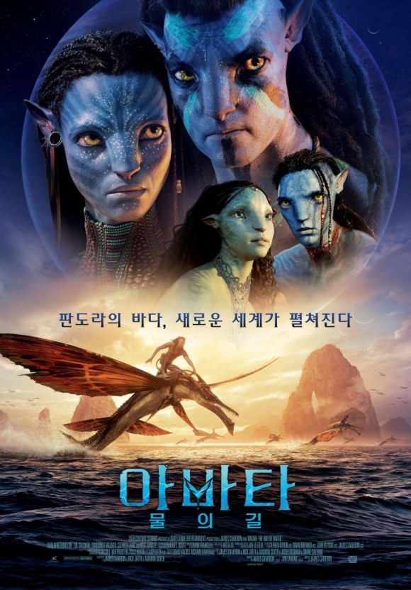

아바타: 물의 길은 판도라 행성에서 '제이크 설리'와 '네이티리'가 이룬 가족이 겪게 되는 무자비한 위협과
살아남기 위해 떠나야 하는 긴 여정과 전투, 그리고 견뎌내야 할 상처에 대한 이야기를 그렸다. 월드와이드
역대 흥행 순위 1위를 기록한 전편 아바타에 이어 제임스 카메론 감독이 13년만에 선보이는 영화로, 샘 워싱턴,
조 샐다나, 시고니 위버, 스티븐 랭, 케이트 윈슬렛이 출연하고 존 랜도가 프로듀싱을 맡았다.